Ontdek Lagoon
Activiteiten
Van historische stadswandelingen in Venetië tot zonnige stranden in Galveston Bay: vind de perfecte activiteit voor jouw reis én plan nu ook makkelijker een gezinsdag met de interactieve kids-kaarten onderaan de pagina.
City Trips Verkennen
Duik in de cultuur en culinaire wereld van twee iconische lagunegebieden.
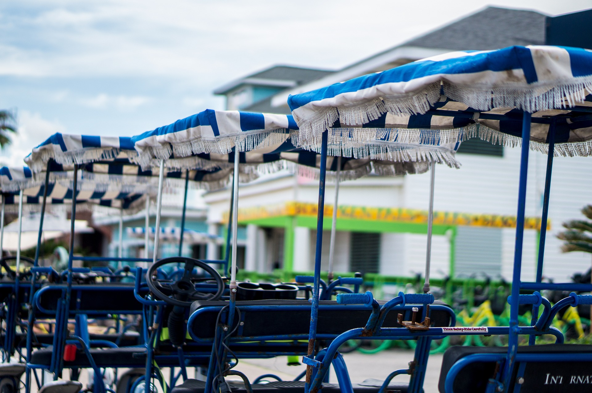
Must Do
Mis deze ervaringen niet: de absolute hoogtepunten van elke bestemming.

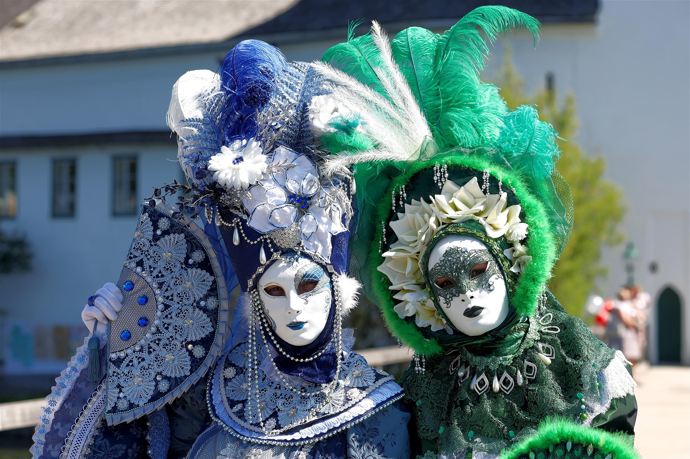

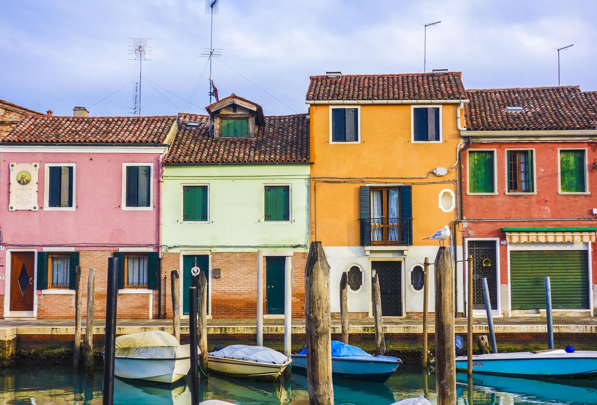
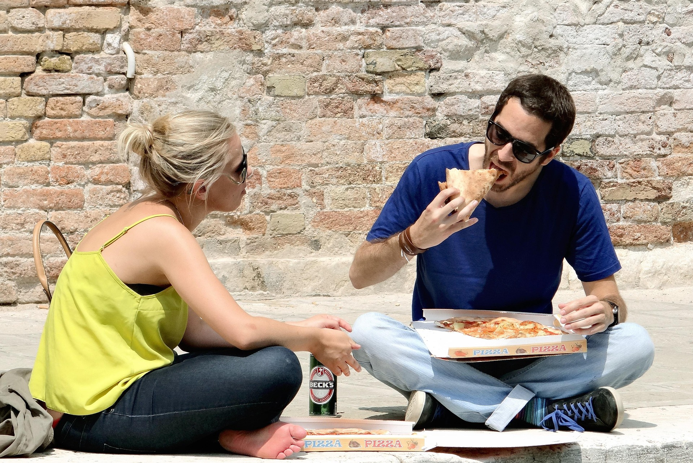
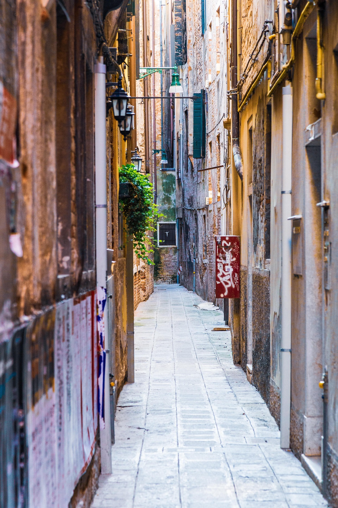
Stranden
Van rustieke Adriatische kuststroken tot brede Golf-stranden: hier zijn de mooiste plekken om te ontspannen.
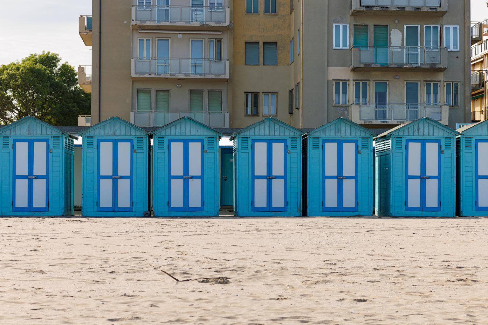
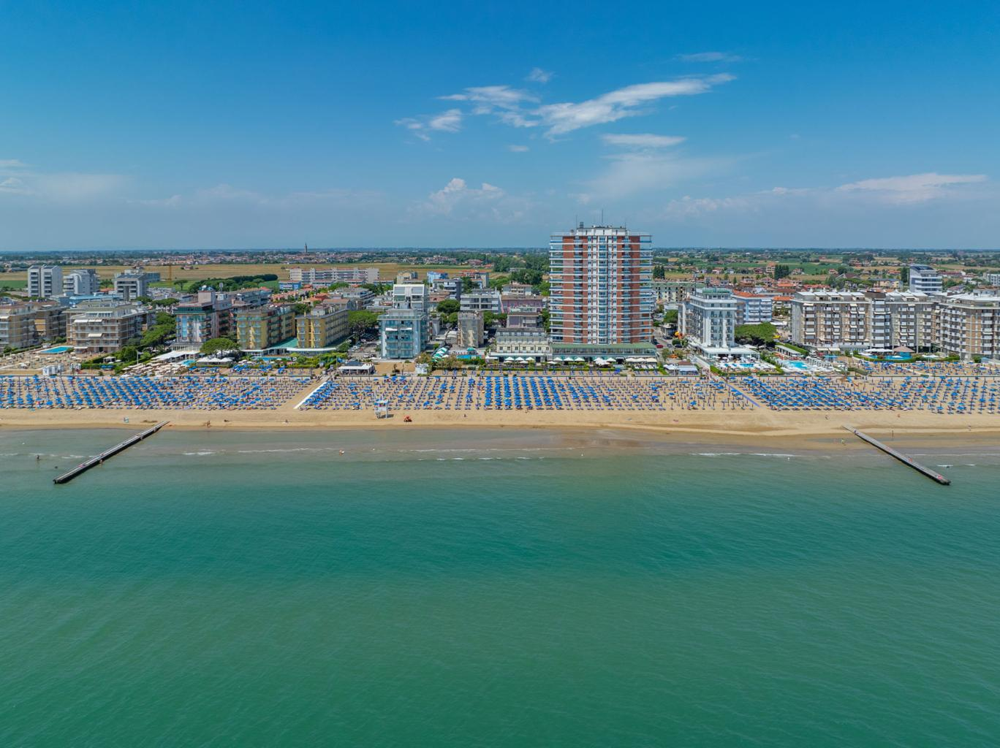
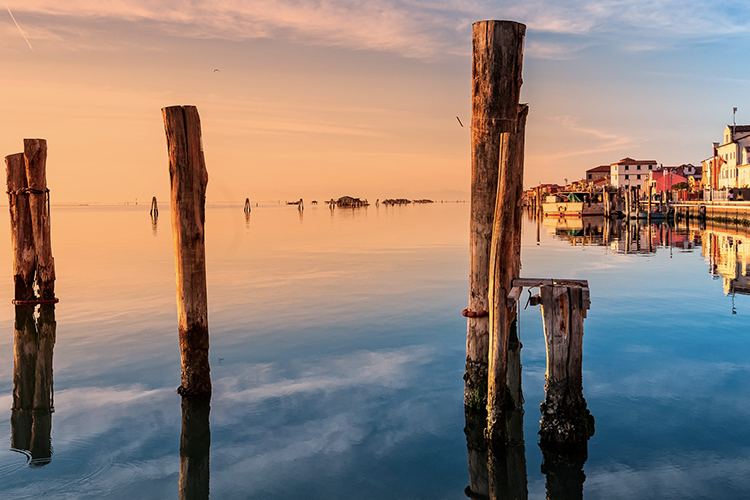
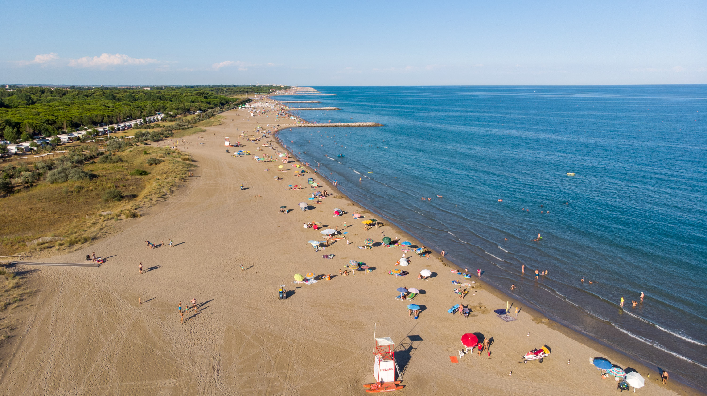
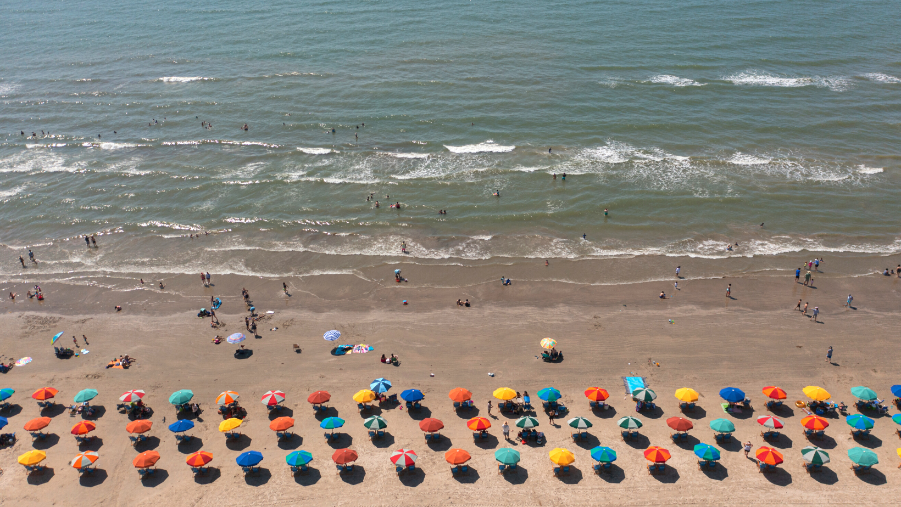
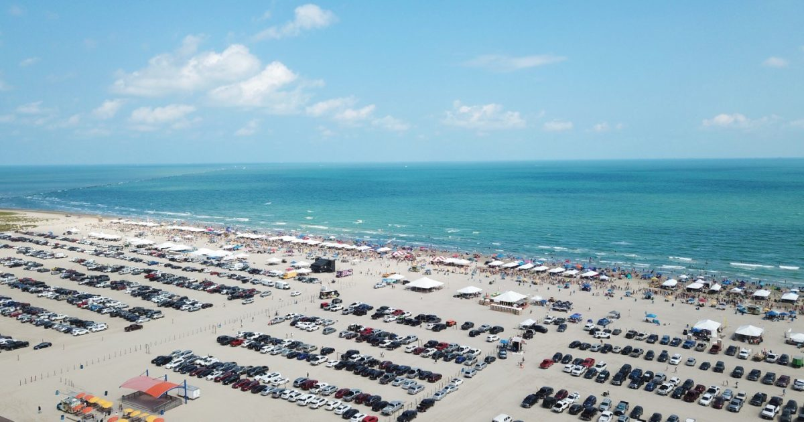
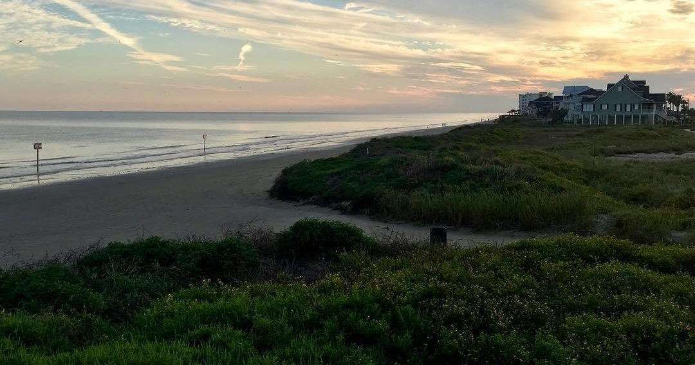
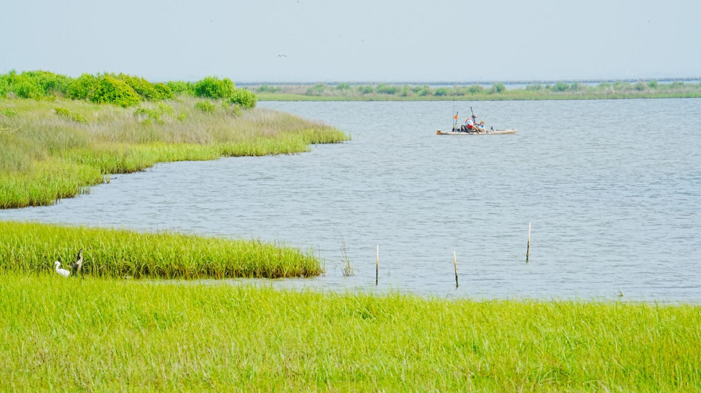
Venetiaanse Stranden
De stranden rond Venetië liggen aan de Adriatische kust en staan bekend om hun rustige sfeer, fijne zand en nette strandfaciliteiten. Lido di Venezia is het bekendst, met lange rijen parasols en een elegante strandcultuur.
Galveston Bay Stranden
De stranden bij Galveston Bay zijn breder en wilder, met een relaxte Texaanse sfeer. Stewart Beach is populair bij families, terwijl East Beach bekendstaat om evenementen en meer reuring.
Natuur Plekken
Ontdek de adembenemende natuur van de lagune-ecosystemen: van rietvelden tot kustnatuur.
.jpg)
Kids Activiteiten
Is het lastig om een dag te plannen met je kids? Hier zie je meteen welke activiteiten gezinsproof zijn, hoe ver ze uit elkaar liggen en hoe lang een activiteit ongeveer duurt. Zo kun je sneller een fijne dagroute maken in Venetië of Galveston Bay.
Plan zonder stress. Klik op een icoon op de kaart en je krijgt een korte beschrijving van de activiteit, een plek voor je eigen foto, een geschatte duur en de afstand naar de dichtstbijzijnde andere activiteit. Daardoor zie je meteen welke stops je makkelijk op één dag kunt combineren met kinderen.
Dezelfde iconen worden op beide kaarten gebruikt, zodat je snel ziet welk type activiteit het is.